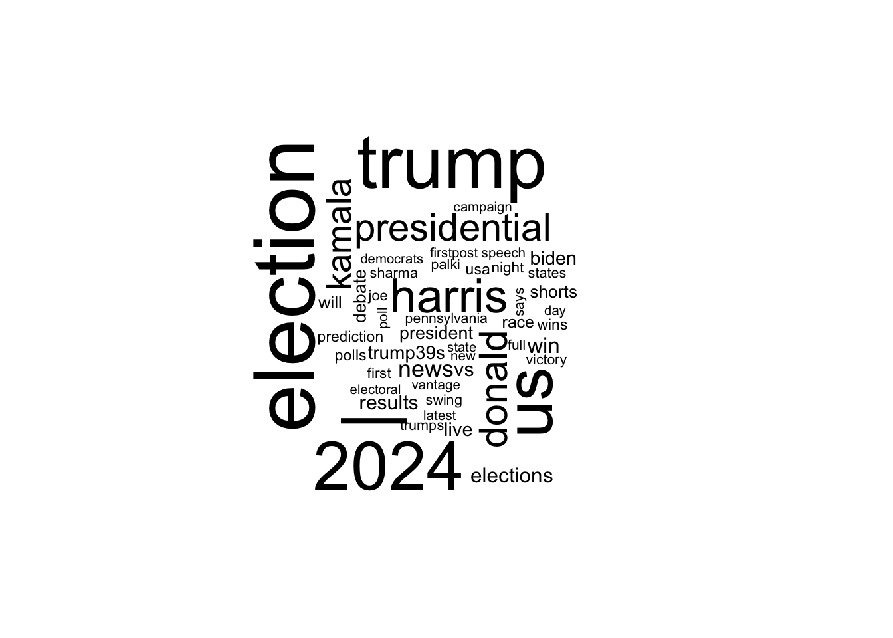
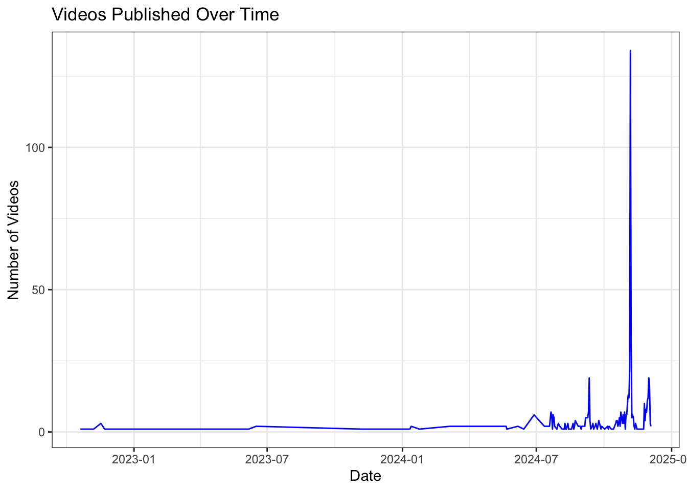
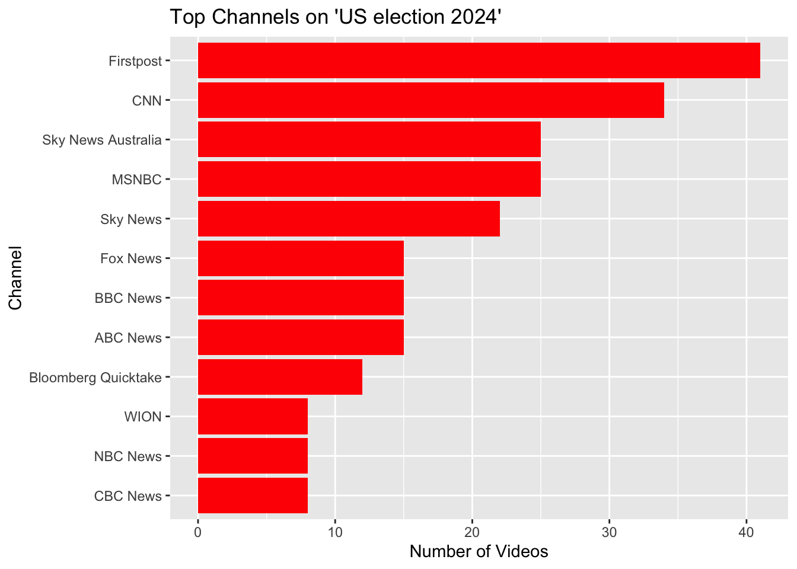
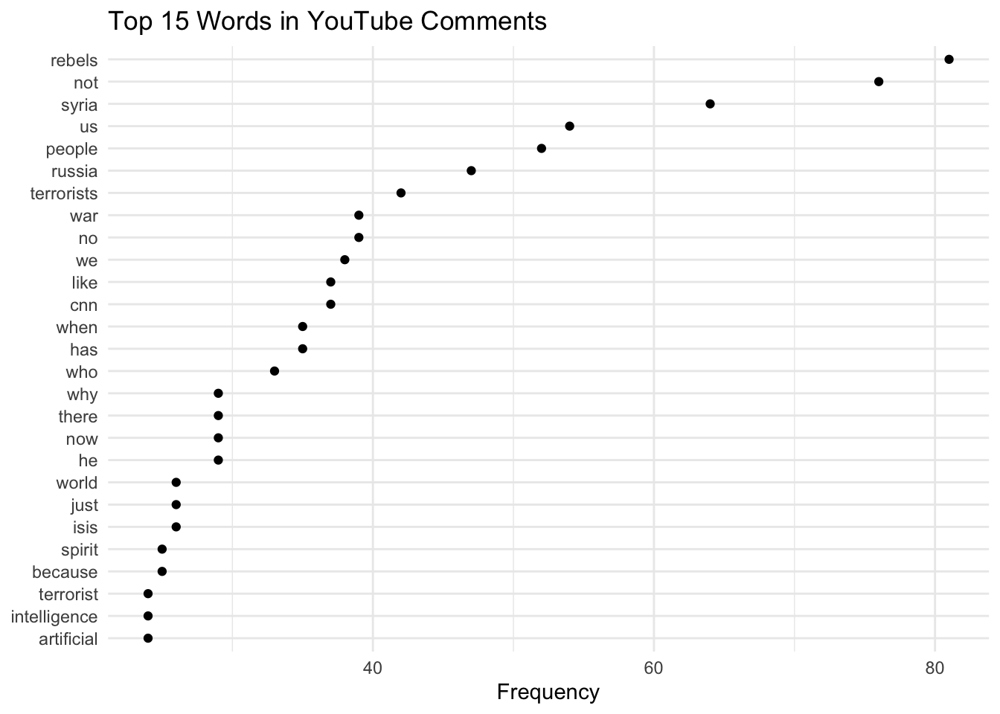

video_id channelId
1 6WK0V1bva8o UCXIJgqnII2ZOINSWNOGFThA
2 K011VEt08Gs UCupvZG-5ko_eiXAupbDfxWw
3 Pwn8LVR7Ufc UC_gUM8rL-Lrg6O3adPW9K1g
4 SMXJ-qx54x4 UCLXo7UDZvByw2ixzpQCufnA
5 kvsfmJI5nJU UCBi2mrWuNuyYy4gbM6fU18Q
6 9olb6OvXjKg UCupvZG-5ko_eiXAupbDfxWw
title
1 Flashback: The biggest 'political turkeys' of 2024
2 Trump announces he intends to replace current FBI director with loyalist Kash Patel
3 Donald Trump's Warning To BRICS Nation Including India | World News
4 America’s shift to the right, in data #shorts
5 How Harris or Trump could win the election
6 Trump wins 2024 presidential election, CNN projectsAssignment 5
Run YouTubenews01.R (prerequisites: YouTube developer API):
library(tuber)
library(tidyverse)
library(lubridate)
library(stringi)
library(wordcloud)
library(gridExtra)
library(httr)
library(tm)
yt_oauth("*****", "*****", token = "")
#### Search for videos related to "US election 2024"
yt_uselection2024 <- yt_search(term = "US election 2024")
#### Display the first few rows
head(yt_uselection2024)# Extract titles and clean up
titles <- yt_uselection2024$title
titles_clean <- tolower(titles) %>%
stri_replace_all_regex("[[:punct:]]", "") %>%
str_split(" ") %>%
unlist()
# Create a word frequency table
word_freq <- table(titles_clean)
word_freq_df <- as.data.frame(word_freq, stringsAsFactors = FALSE)
colnames(word_freq_df) <- c("word", "freq")
# Filter common words (stop words) and plot a word cloud
word_freq_df <- word_freq_df %>% filter(!word %in% tm::stopwords("en"))
set.seed(123)
wordcloud(words = word_freq_df$word, freq = word_freq_df$freq, max.words = 50)
### 4.2. Plot Video Publish Dates
# Format publish dates and aggregate data
yt_sm <- yt_uselection2024 %>%
mutate(publish_date = as.Date(publishedAt)) %>%
count(publish_date)
# Plot the frequency of videos published over time
ggplot(yt_sm, aes(x = publish_date, y = n)) +
geom_line(color = "blue") +
labs(title = "Videos Published Over Time", x = "Date", y = "Number of Videos") +
theme_bw()
# Summarize by channel
top_channels <- yt_uselection2024 %>%
count(channelTitle, sort = TRUE) %>%
top_n(10)
# Plot top channels
ggplot(top_channels, aes(x = reorder(channelTitle, n), y = n)) +
geom_bar(stat = "identity", fill = "red") +
coord_flip() +
labs(title = "Top Channels on 'US election 2024'", x = "Channel", y = "Number of Videos")
Repeat the data collection of CNN’s channel stats, video stats and comments:
## Required Libraries
library(tuber)
library(tidyverse)
library(lubridate)
library(stringi)
library(wordcloud)
library(quanteda)
library(ggplot2)
## CNN Channel ID
cnn_channel_id <- "UCupvZG-5ko_eiXAupbDfxWw"
## get channel stats
cnn_data <- get_channel_stats(channel_id = "UCupvZG-5ko_eiXAupbDfxWw", mine = NULL)
cnn_stats = cnn_data$statistics
head(cnn_stats)Channel Title: CNN
No. of Views: 17001855278
No. of Subscribers: 17300000
No. of Videos: 168244 $viewCount
[1] "17001855278"
$subscriberCount
[1] "17300000"
$hiddenSubscriberCount
[1] FALSE
$videoCount
[1] "168244"video_id = "Yzb5LGwt6LA"
## Get Video Statistics
video_stats <- get_stats(video_id)
cat("Video Stats:\n")
head(video_stats)Analyze the stats and comments:
Video Stats:$id
[1] "Yzb5LGwt6LA"
$viewCount
[1] "26481"
$likeCount
[1] "754"
$favoriteCount
[1] "0"
$commentCount
[1] "359"videocomments <- get_all_comments(video_id)
head(videocomments)[1] "Rebels? Don't you mean Turkish backed former Al-Quaeda Jihadists ?"
[2] "I strongly demand to apply to the United Nations on behalf of Bangladesh, to send the peacekeeping force of the United Nations to India. Muslims and Christians are being killed indiscriminately, everyone's houses are being destroyed, and the High Commission of Bangladesh is being attacked."
[3] "I strongly demand to apply to the United Nations on behalf of Bangladesh, to send the peacekeeping force of the United Nations to India. Muslims and Christians are being killed indiscriminately, everyone's houses are being destroyed, and the High Commission of Bangladesh is being attacked."
[4] "I strongly demand to apply to the United Nations on behalf of Bangladesh, to send the peacekeeping force of the United Nations to India. Muslims and Christians are being killed indiscriminately, everyone's houses are being destroyed, and the High Commission of Bangladesh is being attacked."
[5] "PRESIDENT DONALD J TRUMP 🇺🇸"
[6] "he hee CNN os only focus blame Israel,,CNN dont know anythings related movement of this rebels group..15 million displacement in Yaman, couple of million lost their life in Syria, Afgan, Iran and others,,However CNN just blame Israel because Israel retaliated of hamas massacre ,,sorry CNN" library(quanteda)
library(quanteda.textstats)
library(quanteda.textplots)
library(quanteda.corpora)
library(ggplot2)
library(dplyr)
library(stringi)
# Define a function to remove emojis using a regex pattern
remove_emojis <- function(text) {
stri_replace_all_regex(
text,
"[\U0001F600-\U0001F64F\U0001F300-\U0001F5FF\U0001F680-\U0001F6FF\U0001F700-\U0001F77F\U0001F780-\U0001F7FF\U0001F800-\U0001F8FF\U0001F900-\U0001F9FF\U0001FA00-\U0001FA6F\U0001FA70-\U0001FAFF\U00002700-\U000027BF]",
"",
vectorize_all = FALSE
)
}
# Clean comments by removing mentions, "@@", emojis, and extra whitespace
videocomments_cleaned <- videocomments %>%
mutate(
textOriginal = textOriginal %>%
stri_replace_all_regex("\\S*@\\S*", "") %>% # Remove mentions
stri_replace_all_fixed("@@", "") %>% # Remove "@@"
remove_emojis() %>% # Remove emojis
str_squish() # Remove extra whitespace
)
# Create a corpus from cleaned comments
corp_comments <- corpus(videocomments_cleaned$textOriginal)
# Tokenize the comments
toks_comments <- tokens(corp_comments, remove_punct = TRUE)
dfmat_comments <- dfm(toks_comments)
# Define custom stopwords
custom_stopwords <- c("the", "and", "to", "is", "are", "a", "in", "of", "you", "this", "they", "that", "it", "from", "by", "i", "with", "for", "these", "as", "on", "be", "all", "their", "so", "have" , "al", "was", "at", "your", "it's", "do", "assad", "but", "will", "what", "if", "one", "how", "or", "about", "know")
dfmat_comments <- dfm_remove(dfmat_comments, pattern = custom_stopwords)
dfm_nonzero <- dfmat_comments[ntoken(dfmat_comments) > 0, ]
tstat_freq <- textstat_frequency(dfm_nonzero, n = 27)
# View the top 20 frequencies
print(head(tstat_freq, 27))Can you use quanteda to analyze the text data from YouTube comments?
feature frequency rank docfreq group
1 rebels 43 1 39 all
2 us 38 2 29 all
3 not 36 3 33 all
4 syria 34 4 28 all
5 people 32 5 19 all
6 we 28 6 23 all
7 russia 28 6 25 all
8 biden 19 8 13 all
9 why 18 9 16 all
10 who 18 9 18 all
11 putin 18 9 14 all
12 cnn 17 12 9 all
13 million 17 12 4 all
14 syrian 17 12 11 all
15 terrorist 17 12 10 all
16 united 16 16 6 all
17 just 15 17 13 all
18 war 15 17 15 all
19 now 15 17 15 all
20 has 15 17 13 all
21 terrorists 15 17 13 all
22 no 15 17 12 all
23 when 14 23 12 all
24 being 13 24 5 all
25 trump 13 24 11 all
26 other 13 24 12 all
27 america 13 24 13 all# Visualize the Most Frequent Words
tstat_freq %>%
ggplot(aes(x = reorder(feature, frequency), y = frequency)) +
geom_point() +
coord_flip() +
labs(x = NULL, y = "Frequency", title = "Top 15 Words in YouTube Comments") +
theme_minimal()
# Create a Word Cloud
set.seed(132)
textplot_wordcloud(dfm_nonzero, max_words = 100)Assignment Reflection:
It took considerable effort, but I successfully downloaded the comments from a CNN YouTube video. To analyze the data, I used ChatGPT for coding assistance along with the quanteda package (tutorials) and the tuber package (documentation).
I processed the comments by tokenizing the words, removing emojis and usernames, and filtering out filler words. This allowed me to create visualizations of the most frequently used words. The analysis revealed that the comments were predominantly negative, suggesting the video likely discusses terrorism in the Middle East and Syria, based on the word frequencies and the context of a CNN video.